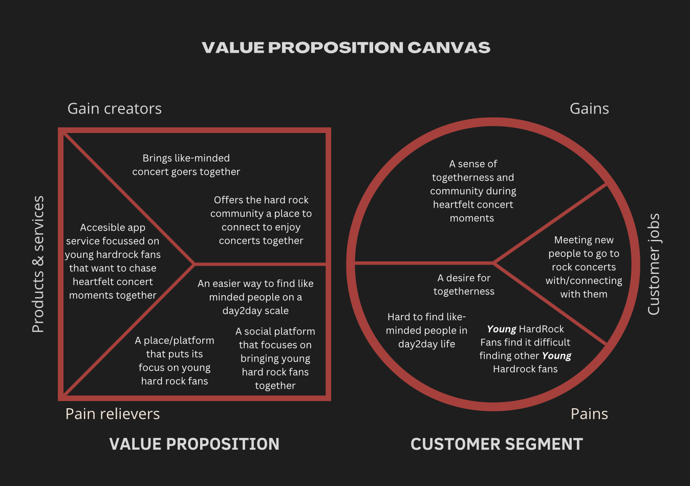
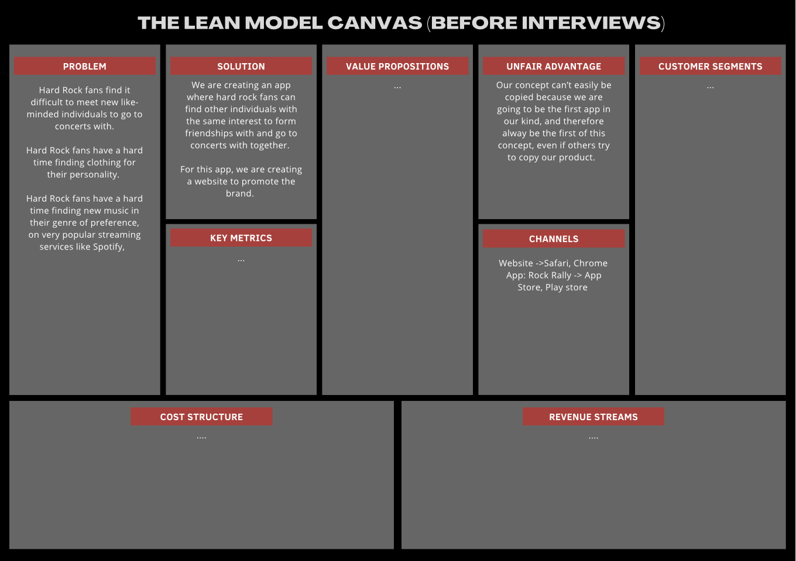
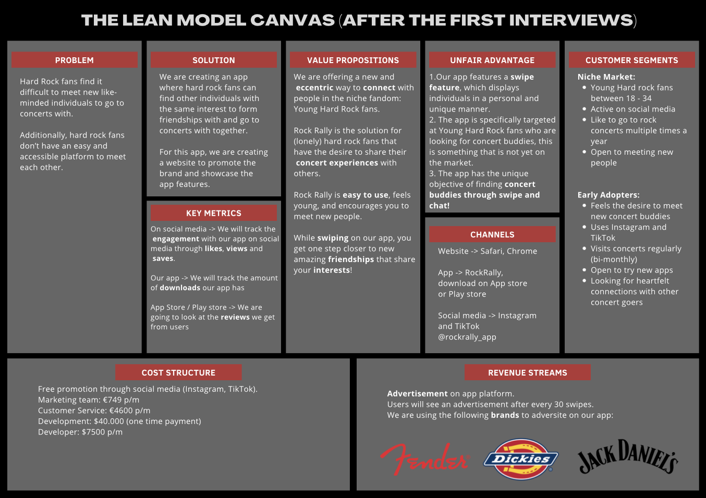
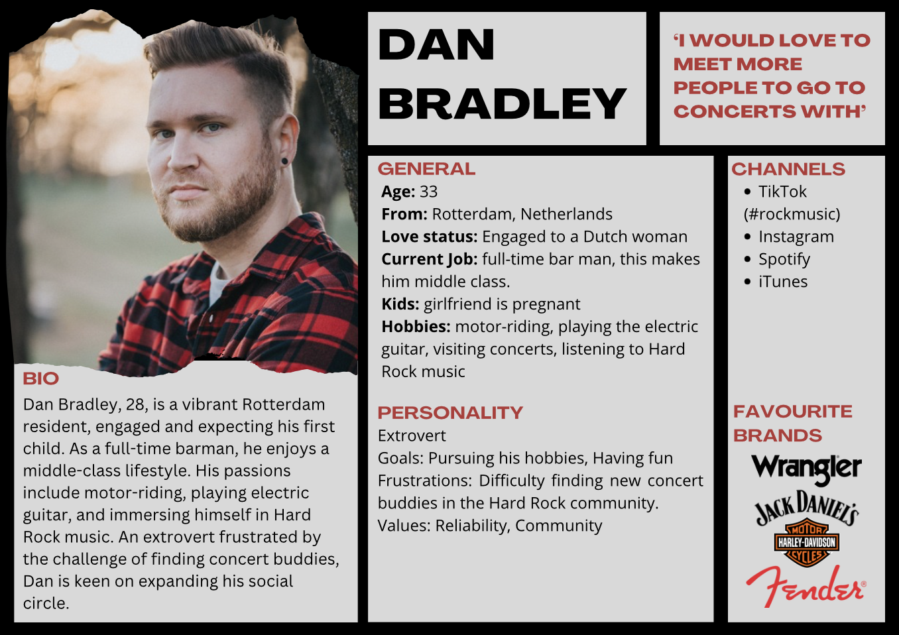
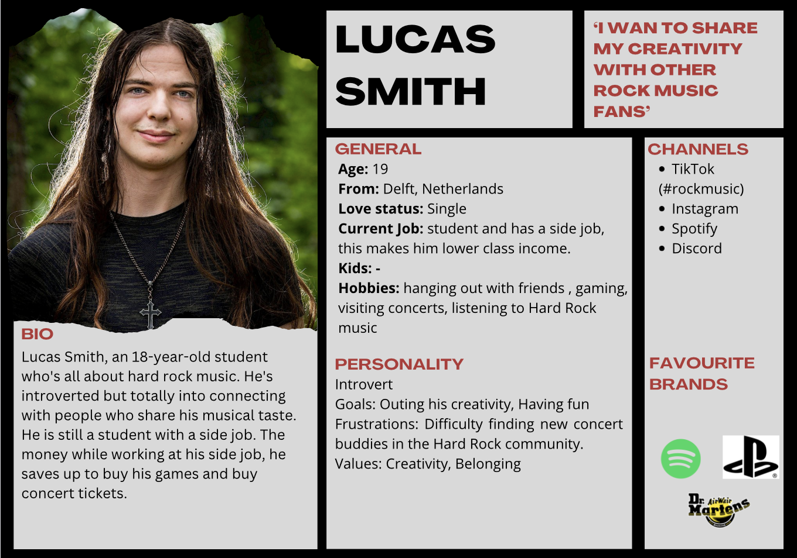
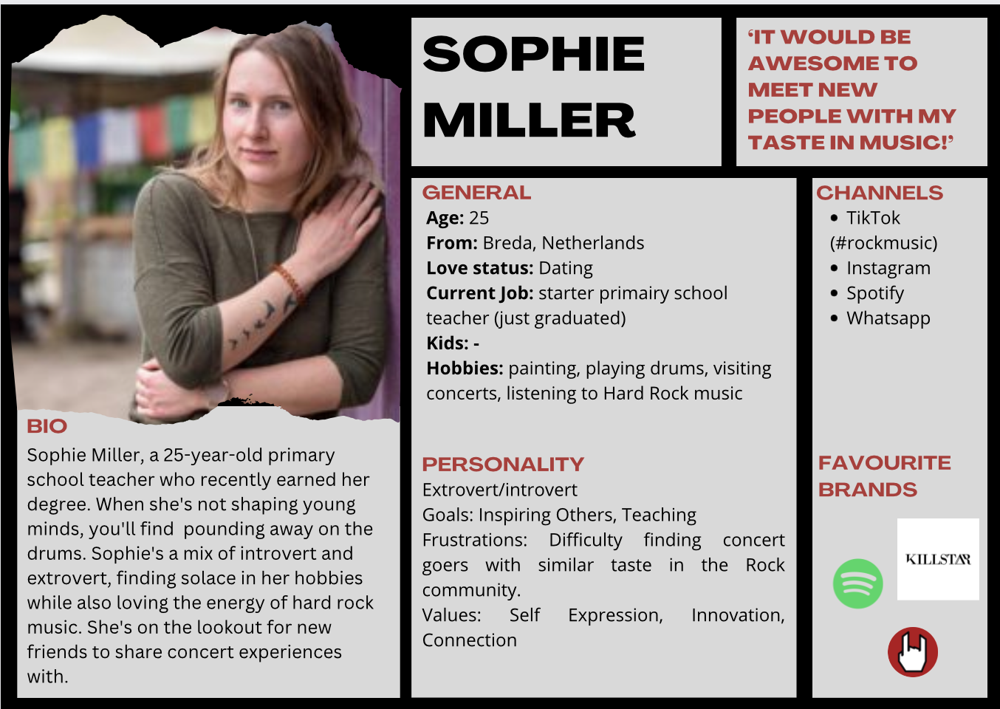
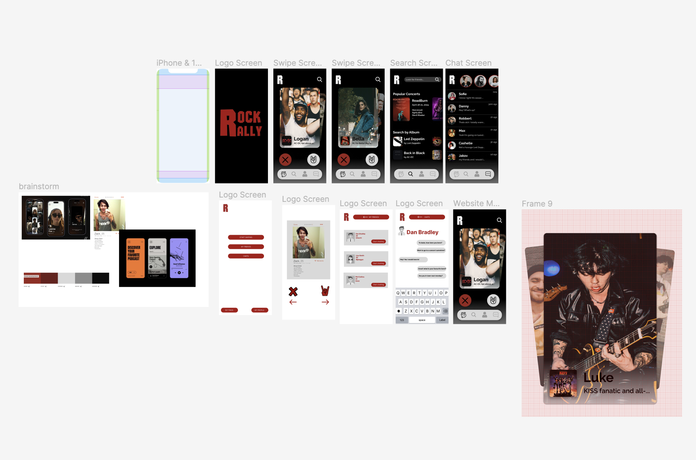

General Information
Rock Rally's website is publicly available at devlinvd.github.io/rockrallywebsite
This website was created by…
- Devlin van Doormalen (ID: 222573)
- Suus Hooijer (ID: 221296)
- Willemijn ter Horst (ID: 223678)
- Feline Külsen (ID: 233073)
Content
| # | Student ID | Value | Name and link of content |
|---|---|---|---|
| 1 | 233067 | All Values | Our Journey |
| 2 | 223678 | Accessibility | How to use RockRally |
| 3 | 233067 | Accessibility | FAQ |
| 4 | 222573 | Togetherness | Value: Togetherness |
| 5 | 221296 | Accessibility | Value: Accessibility |
| 6 | All | Community | Value: Community |
| 7 | All | All Values | Vision |
| 8 | 223678 | All Values | Introducing RockRally |
| 9 | 223678 | Accessibility | Find Your... |
| 10 | 233067 | Accessibility | From Headbanging... |
Production
Design Elements
-
The Rock Rally colour scheme:
- #00000 The color scheme aligns with the brand identity of Rockrally, symbolzing the hard rock genre. Black is often associated to power, mystery and death.
- #00406B red is often associated with excitement and passion it can also be used to symbolize anger.
- #FFFFFF White provides contrast and ensures readability, enhancing user experience.
These colours have been carefully chosen to represent the Hard-Rock genre as the topics anger, death and passion are commonly used in Hard-Rock lyrics.
- Font choices:
- User interface patterns
- The structure of the navigation and content
- Menu Organization
Fonts: Bebas Neue (for Titles), Rockstone (for large Headings), Lato (paragraphs)
Bebas Neue offers a modern and sleek appearance, used to cater to the look and feel targeted at the 18-35 age group.
Rockstone, with its bold and rough look, is used to strengthen the rock theme, creating visual impact and enhancing brand recognition.
Lato is used to ensure readability, enhancing the user experience.
*Grid Layout*: Utilizing a two-column structure on the homepage enhances readability and visual appeal. It allows for balanced content distribution, ensuring that information is presented in a clear and organized manner.
Hero Image Header: The prominent use of an eye-catching image in line with the hard-rock theme alongside download buttons prominently positioned at the top of the page maximizes visibility and encourages user engagement. This strategically placed element serves as a focal point, guiding users towards the primary call-to-action - downloading the app. In the Hero image, a single line of text is also used to inform users of the purpose of the app from the get-go.
Text-Cards: To display the Company values, a simple three card structure is used. This method of display is chosen to separate this element from the same recurring elements throughout the website as this is an import part for our audience to notice. Since it is different than the rest of the structure of our website, it will immediately stand out and catch the users eye. The colors of these cards are still within the look and feel of the colors used throughout the website. The card structure allows for a coherent and simplistic way to display this. In addition to that, corresponding Icons are used to immediately notify audiences what the following text is about.
FAQ accordion: For the Frequently asked questions, a dropdown/foldable accordion is used. This is used to have an easy display of FAQ but not take up too much space on the page. Users have the option to open the answers of the questions if they please. This style allows for a coherent and simplistic look.
Download Buttons: Placing download buttons prominently throughout the homepage ensures accessibility and encourages users to take action. By offering direct links to the app stores of both Apple and Google, Audiences can feel comfortable since the buttons offer a direct line to these app stores, making sure users do not need to take unnecessary extra action since the app stores are just a click away.
Content Distribution: The two-column layout effectively balances visuals and textual content, catering to different user preferences. The concise and engaging text on one side complements the captivating imagery on the other, providing users with a comprehensive overview of Rockrally's features and benefits.
Simplified Menu: Prioritizing essential navigation options in a clear and concise menu structure enhances usability and reduces cognitive load. By focusing on key sections such as "The App," and “About us” users can easily access relevant information without feeling overwhelmed.
Mobile Responsiveness: Ensuring seamless navigation and readability across various devices, including smartphones and tablets, is crucial for accommodating the on-the-go lifestyle of the target audience. The menu organization adapts responsively, providing an optimal user experience across all screen sizes.
In summary, the design choices for Rockrally's homepage have been purposefully crafted to resonate with the target audience of young hard rock fans aged 18-35. From the bold color palette and font selection to the intuitive user interface elements and organized content distribution, every aspect of the design reflects our brand's identity and objectives.
Credits
Links to third-party elements:
- Images; https://unsplash.com/photos/shallow-focus-photography-of-man-in-white-shirt-nPz8akkUmDI https://unsplash.com/photos/woman-in-blue-denim-jacket-and-black-bottoms-standing-outdoors-smXUDWEXeb8 https://unsplash.com/photos/man-grey-scale-photography-wys9Jty8wNQ https://unsplash.com/photos/man-sitting-near-gray-steel-roller-shutters-during-daytime-Nm70URdtf3c https://unsplash.com/photos/smiling-woman-standing-next-to-glass-window-93g8eMIaRXs https://unsplash.com/photos/woman-in-white-and-red-shirt-vp9mRauo68c https://unsplash.com/photos/man-wearing-black-crew-neck-t-shirt-drinking-Kp0OwEX8uc8 https://unsplash.com/photos/woman-in-red-sweater-hqTG0TYaegI
Hero Image with Buttons: https://www.w3schools.com/howto/howto_css_hero_image.asp
Navbar: https://getbootstrap.com/docs/5.3/components/navbar/#how-it-works
Two-Column System: https://getbootstrap.com/docs/5.3/layout/columns/
Cards: https://getbootstrap.com/docs/5.3/components/card/
Corporate Page Template: https://buas-media-interactive.github.io/prj4-group-template/corporate.html
Footer Social media icons: ChatGPT prompt; “can you create a html code for a bar for in the footer with social media icons for instagram, TikTok and Spotify”
Social Media Icons: https://fontawesome.com
Testing Report
Testing Protocol
For the testing of the showcase website, we have asked 5 individuals from our target audience to follow a think-aloud interview with us.
The interviews were conducted either online or in person, making use of audio recording (Voice Memos) and note taking tools (Notion).
The information they were given before the interview:
Then, we followed up with a quick explanation of what is expected of them during the think aloud session:
For the testing, they were given the tasks of finding out what the website is showcasing, and what RockRally (the brand) is about. These tasks feed into our test goals:
With this, the participants were given 2 minutes to freely roam the website, and voice their thoughts and opinions.
Lastly, they were asked to answer a final set of questions regarding the testing:
- What is the website showcasing? Please explain with as many details as you managed to collect.
- What is RockRally about? Please explain with as many details as you managed to collect.
- Do you feel like you have a comprehensive idea of RockRally as a product? Why/Why not?
- Do you feel like you have a comprehensive idea of RockRally as a brand? Why/Why not?
- Do you feel like the visuals on the website fit these ideas?
- Was the website easy to navigate? What made it easy/difficult?
- Were there any confusing parts about the website? Can you point them out?
- What was confusing about these things to you? How do you feel they might be improved?
- Do you feel like this website speaks to you and your interests? Why/Why not?
- Did this website manage to make you curious about RockRally? In what way?
- Are there any improvements you would like to see to this website going forward? How might these improve the website experience for you?
- Finally, how did this website make you feel? How does this affect your view of RockRally?
Findings:
To gain feedback from a wide variety of individuals in our target audience, we deliberately chose testers with differentiating ages, genders and band preferences. Below is a full list of the testers, including their name, age, gender and relation to our target audience.
Participant 1: Julia Snoeijs, 19, female, hard rock fan, favourite band: AC/DC
Participant 2: Floris van Ommen, 24, male, hard rock fan, favourite band: The Warning
Participant 3: Silke Hooijer, 21, female, rock fan, favourite band: Twisted Sister
Participant 4: Kenzie van Doormalen, 19, female, hard rock fan, favourite band: KISS
Participant 5: Justin Kwee, 26, male, hard rock fan, favorite band: Guns n’ roses
Testing Results
| Testing Results | Positive/Negative (ranked by importance) | Improvement |
|---|---|---|
| The person would describe the website as a clear platform for meeting new people to attend festivals/concerts with. The tester would also use this app themselves. This app is definitely better for young people than other methods of connecting with hard rock fans, such as Facebook | Not mentioned | |
| The person describes the website as clear and well-organized. It's clear what the company stands for. The features are clear, and you can easily swipe. The branding fits well with the target audience. It's user-friendly. The person would download the app | Not mentioned | |
| The person describes the website as clear. "Connect with hard rock fans", clearly shows what it's about. The branding fits the target audience. It’s user-friendly. The person would use the app. The app's web page makes him interested. |
|
The photo on the homepage could be more clear. |
| The person describes the website as a place where rock fans can meet each other. Clear idea of what Rock Rally is and how it works. It's clear that it represents a rock community. Good and clear visuals that match the brand. The website was very user-friendly. The app appeals to the person, makes them curious, and they would use the app | It could be made clearer that there are multiple pages available. | |
| The person finds it clear who the app is for. Easy to use and straightforward. The person would use the app. The branding and colors suits the Rock vibe | The swipe function of the app was not made clear. It takes a bit of searching to find out what's possible on the website. Not immediately clear from the homepage that it's a 'swipe' app. |
*Link to Interview Audio's*
Our Interview Audio Files
Future Improvements:
According to our testing, the website is overwhelmingly positively received and capable of communicating our brand effectively. Nevertheless, there were some points that were slightly less clear to the testers and should therefore be improved in the future.
We came across 3 main potential improvements:
-
The image on the homepage is unclear:
The image that is visible as the ‘Hero’ section of the homepage is too vague, making it hard to read the text on the photo. The vagueness includes both the contents of the image and the level of blurriness.
With this, an improvement could be made in 2 steps. Firstly, change the image to something that is more recognizable and less complex. This would convey the message of the RockRally app better and create less confusion for website users. Secondly, change the level of blurriness in the image to make it clearer. This might also improve the readability of the Header text that is layered overtop.
-
Make it clearer that there are multiple website pages:
Testers were confused in finding multiple pages on the website. They did not see that more pages were available to open at first glance through the website.
This issue could be approached in multiple ways. One way could be to add call-to-actions on the pages to move to the next page. For example, a section on the landing page referring the user to ‘learn more’ on the About Us page. This way all website pages are connected in a logical way.
A second way could be to have an animated Navigation/Menu bar. For example, when you scroll down on a page the menu sticks to the top of your screen, so that the user can see the other available pages, no matter how far the user scrolls down.
-
The app features were not highlighted well enough:
According to our testers, the app's features were not obvious enough on the landing page. Especially the app’s swipe feature.
To improve this, we could add more explanatory imagery about the swipe feature. For example, adding a GIF that shows the use of the swipe feature to meet new rock buddies. This would make it obvious how the app functions, without having to read the copy on the website.
Marketing
*Link to Communication and Media plan*Context:
Communication Objectives
Reach objectives:
Overall: To gain awareness for our brand, we want to reach 10.030 people within our target audience, making use of various social platforms before the 3rd of April 2024.
TikTok: We want to reach 10.000 views on TikTok before the 3rd of April 2024, by means of entertainment based short form video content.
Instagram:We want to reach 30 followers on Instagram before the 3rd of April 2024, by means of posting informative, trend-driven and entertainment-based photo and video content.
Affect:
We want to connect with our target audience through creating relatable and engaging content on social media before the 3rd of April 2024.
We want our target audience to feel a sense of togetherness. With our app, they will not feel so alone in their interest, and they will be able to make friends and friend groups that have the same music taste as they do. It will affect their social life.
With the content we will put out, we want our audience to feel the togetherness trough the screen. They will feel motivated to be social and have fun with new people. After looking at our content, they will feel happier and more motivated. It will affect their mental health positivity.
Response
We want to gain two (2) responses from individuals out of our target audience expressing interest in our app, before the 3rd of April 2024.
We want to gain awareness for our brand, but ultimately also create desire. We can e=test this through the responses/comments that we receive. Therefore, we want to have at least 2 responses from people who might be genuinely interested in our app.
Media Tactics
Both TikTok and Instagram place themselves in the top 3 of social platforms used by our target audience (Zote, 2024b). Therefore, these will be some of the best platforms to promote our app.
TikTok
On TikTok we will create an account and upload videos that are in line with our website/app. Our target audience specifically takes an interest in educational videos that provide value. Think of how-to guides and informative content that addresses their needs and interests. (Linh, 2023)
TikTok has the highest engagement rate among popular social media. Micro influences (<15.000 followers) have an engagement rate of over 17%, which is a lot more compared to Instagram's nearly 4% or YouTube’s nearly 2% (Linh, 2023). This means that the chances of reaching our response objective would be highest on this this platform.
TikTok is known for its ‘easy virality’. Videos can go viral within hours or days, which fits our time bound objectives (Moran, 2024). To go viral, you will have to create trend-driven or unique content, interact with the audience and have a bit of luck with reaching the desired viewer base. (Moran, 2024)
To reach our desired viewer base (target audience) we will use the hashtags #hardrock (492.2K videos) and #rock (6.8 million videos).
Instagram
On Instagram, we will use a slightly more professional method, with a profile page for our website / app with a professional looking feed and crucial information spread on our page. It will be harder to reach an audience on this app, but the people who are genuinely interested will follow our account.
On Instagram, making use of the right hashtags is crucial in reaching the right people. They have a large impact on who will see your posts on their explore page. (Demeku, 2023) The most effective number of hashtags in 2024 is around 20, so we will follow this in the new posts we create. (Demeku, 2023).
We will create some following by first following people within our target audience and get a follow back.
Content Calendar
March 1st – April 4th
We have chosen this month to do our promotion on social media, because we going to ‘launch’ our app on the 8th of March. This way, we can do some building up to the big launch, but also keep posting content once the app is launched. We are doing it till the fourth of April because that was advised to us after our presentation, because the deadline is the fifth of April.
We are going to post on these days, because they vary and this way, we post over a span as many days, to stay as active as possible on social media. We tried to spread out the posts over the week as much as possible. (Glover [&] Glover, 2024)
We post around 4 times a week, 2 TikTok's and 2 Instagram posts. We also did research and found out between 3-5 times a week is the best to keep the best relationship with your target audience. (How Often to Post on Social Media in 2024, 2023)
However, we changed it to posting on TikTok 4 times a week as the project progressed, because we hoped to get higher results.
We are going to post at the end of our school days, at the beginning of the evening and just after lunch. This is because the best time to post on social media to gain the most interaction is the beginning of the evening, to be more specific; The best times to post on social media, in general, are 7:00 PM, 3:15 PM, and 8:41 AM on Friday, Wednesday, and Monday (Glover [&] Glover, 2024).
We will follow the colour scheme and logos that we use also for our content.
Our color palette
Our logo and app icon
Templates for Tiktok video content
Our Posts
Tiktok
Our account name is @rockrally_app, the name of our app. To gain an audience, these are the videos we made and the things we did on this platform:
The first video we posted was this one: https://www.tiktok.com/@rockrally_app/photo/7341358845484092705
It is a fun educational video about the idea of our app, very simple but it explains what our app is about. I used the template that is also shown in this document, with colours of our colour scheme.
We posted this the 3rd of March at 15.05. (Glover & Glover, 2024)
As a sound we used a sped-up version of You Give Love a Bad Name by Bon Jovi, because this is of course a rock song, and this will gain attention of our target audience. We used the sped-up version because that is popular on the app and reaches more people than songs at their normal speed. (Coward, 2022)
We have also started to follow multiple hard rock fans and fan accounts on TikTok, because they are our target audience, and we want them to follow us and interact with us.
As a location, we put The Netherlands, as this is the country our target audience lives in.
The second video we posted on Monday was this one: https://www.tiktok.com/@rockrally_app/video/7343210347165240608
We used the song Highway to Hell by ACDC, a classic rock song. A lot of people will recognise this melody because it has around 1,400,000,000 streams on the streaming service Spotify.
We posted this video on 6th of March at 19.15 (Glover & Glover, 2024)
It is a very simple and short video. We used 3 hashtags in the description of the video: #hardrock (492.2K videos), #rock (6.8 million videos),#hardrock fans (282 videos).
As a location, we put The Netherlands, as this is the country our target audience lives in.
This video gained some interaction, we even got a comment. However, we could not figure out what this comment meant, we decided not to do anything with this comment.
The third video we posted on thursday was this one: https://www.tiktok.com/@rockrally_app/video/7343604147960237345
For this video, we tried something different than the previous two videos. This video is not about our brand, but more focused on the biggest hobby of our target audience; hard rock. We made a video focusing on the guitar solo in Comfortably Numb by Pink Floyd, a popular rock song that has around 571,000,000 streams on Spotify.
This video itself has nothing to do with our app specifically, but it does gain the interest of our target audience, and the caption is all about our app: ‘Want to meet new concert buddies? Our new app RockRally is available from the 8th of March!’
We posted this video on 7th of March at 15.00. (Glover & Glover, 2024)
We also used the 3 hashtags again that we used in our previous video (#hardrock, #rock, #hardrockfans)
As a location, we put The Netherlands, as this is the country our target audience lives in.
The fourth video we posted, we tried to connect with the audience via a trend that is very big on TikTok right now. If we take a look at this TikTok, made by influencer Noah Beck: https://www.tiktok.com/@noahbeck/photo/73377
We can see that these videos gain a lot of interaction with the audience and a lot of people relate to the topic. This is why we decided to try out this trend as well. This is good for our brand, because our target audience is young people, and young people follow trends. This video is mainly a shot to gain as much engagement as possible. After we get the engagement, we want to post more content about the app.
This is our take on it: https://www.tiktok.com/@rockrally_app/photo/7345414595147779360
As a background song, we used the song that belongs to the trend. It is not a hard rock song, but we decided to really do the trend the way that other creators and brands are doing it, so also with the song. It is still a popular song; End of Beginnings by Djo, a song that has around 144,000,000 streams on Spotify.
We posted this on 12th of March at 19.09. (Glover & Glover, 2024)
We also used the 3 hashtags again that we used in our previous video (#hardrock, #rock, #hardrockfans)
As a location, we put The Netherlands, as this is the country our target audience lives in.
For the fifth video, we looked back on our video’s so far and decided that the guitar riff video (the 3rd one) gained the most interaction, therefore, we went with the same concept. This is the video: https://www.tiktok.com/@rockrally_app/video/7346227610910788896?_r=1&_t=8kfoMlvjvUm
As you can see, we posted a live performance of the band The Warning, a band from Mexico that has close to 800,000 monthly listeners on Spotify. Again, nothing specific about our app mentioned in the video, but the caption again said: ‘Want to meet fans to go to concert with? Download our app RockRally!’
We posted this video on the 14th of March, at 19.20. (Glover & Glover, 2024)
We used the 3 hashtags as usual again. (#hardrock, #rock, #hardrockfans)
As a location, we put The Netherlands, as this is the country our target audience lives in.
For the sixth TikTok video, we decided to try something different, not a trend, not a guitar solo or live performance video, but a video all about the functions of our app. We did this because our most recent video, the third one, did not gain as many views at the other live performance video did. That is why we tried a video about our app again. Here is the video: https://www.tiktok.com/@rockrally_app/photo/7347713841641327904?is_from_webapp=1&sender_device=pc&web_id=7337223147823695392
This video contains the description of what our app does, so it says that you can swipe, chat, and connect with other hard rock fans. To keep the outlay consistent, we used the aforementioned templates to put the text in, and we made a swipe-post with these templates.
We posted this video 19th of March at 15.23. (Glover & Glover, 2024)
We used the 3 hashtags as usual again. (#hardrock, #rock, #hardrockfans)
As a location, we put The Netherlands, as this is the country our target audience lives in.
As a background song we chose The Trooper, by Iron Maiden, a hard rock song that has around 419,000,000 streams on the streaming service Spotify.
We got a comment from a hard rock fan, stating that he thinks that the app is a good idea. This made us happy and motivated to continue.
For the seventh video, video, we tried to bring other hard rock fans on our page, and that is why we reposted a cover of a man that does a guitar solo in Beat it, by Michael Jackson. His original video got over 218,300 likes, and 3.2 million views. We reposted it with credits in the video: https://www.tiktok.com/@rockrally_app/video/7349132851704499488?_r=1&_t=8kt7UJosYMr
Again, this video is not about our app, but we do mention it in the caption: ‘Awesome! Check out RockRally to connect with other rock fans!’
We posted this video on the 22nd of Marh at 15.34. (Glover & Glover, 2024)
We used the 3 hashtags as usual again. (#hardrock, #rock, #hardrockfans)
As a location, we put The Netherlands, as this is the country our target audience lives in.
For the eighth video, we tried something different again. Nothing about our app, but something that could be useful for our target audience. Our target audience uses these social media platforms. Therefore, they also have phones. That is why we made a video with hard rock wallpapers that our target audience can use and engage with.
This is the video: https://www.tiktok.com/@rockrally_app/video/7349132851704499488?_r=1&_t=8kt7UJosYMr
Again, in the caption we mention the app: ‘Feel free to use! Check out the new app RockRally to connect with other hard rock fans!’
As a sound, we used back in black by ACDC, one of the most popular hard rock songs of all time. The song has 1,500,000,000 streams on Spotify.
We posted this video on the 24th of March at 19.22.(Glover & Glover, 2024)
We used the 3 hashtags as usual again. (#hardrock, #rock, #hardrockfans)
As a location, we put The Netherlands, as this is the country our target audience lives in.
The ninth video we posted, was one about our app again, because the last video about our app got almost 1500 views. Something we hope to accomplish again.
Here is the video: https://www.tiktok.com/@rockrally_app/photo/7350293883416333601
For a caption, we mentioned the app again. ‘Free to download!’
We posted this video on the 25th of March, at 14.36.(Glover & Glover, 2024)
We used the 3 hashtags as usual again. (#hardrock, #rock, #hardrockfans)
As a location, we put The Netherlands, as this is the country our target audience lives in.
For the tenth video, we tried to follow a trend to get as much engagement as possible. We followed the template of this video, that has around 80,000 likes. We tried following a trend because that can help a lot with engagement and extra followers. (Why Are TikTok Trends Good For Marketing, z.d.)
Her is the trend video:https: https://www.tiktok.com/@that_mf69l/video/7350449947042499873
And this is our take on this trend: https://www.tiktok.com/@rockrally_app/video/7350622619638451489
We decided to put our own music under the video, the hard rock song Wasted Years, by Iron Maden, a song that has around 145,000,000 streams on Spotify.
This TikTok was posted on the 26th of March, at 15.10(Glover & Glover, 2024)
We used the 3 hashtags as usual again. (#hardrock, #rock, #hardrockfans)
As a location, we put The Netherlands, as this is the country our target audience lives in.
For our eleventh video, we posted an original video filmed by us. Suus (head of TikTok in this projects) works at a bar, and during her shift, Sweet Child O’ Mine by Guns n’ Roses started playing. She decided to film this for a TikTok:https://www.tiktok.com/@rockrally_app/video/7350977526396718369
The song playing in the video has over 1,800,000,000 streams on Spotify.
This video has nothing to do with our app, but is just meant to create a connection with our followers and the entertain them with content. The caption does mention the app: ‘The best going out music! Check out RockRally to meet new concert buddies!’
This video was posted on the 27th of March, at 18.00(Glover & Glover, 2024)
We used the 3 hashtags as usual again. (#hardrock, #rock, #hardrockfans)
As a location, we put The Netherlands, as this is the country our target audience lives in.
For our twelfth video, we posted a short video about our app again, as these videos often get the most engagement (for what we have so far). Here is the video:
https://www.tiktok.com/@rockrally_app/photo/7351375754304802081
The song we used under this video is Welcome to the jungle by Guns n’ Roses, a hard rock song that has around 1,100,000,000 streams on Spotify.
In the caption we also used the 3 hashtags. (#hardrock, #rock, #hardrockfans)
We set the location as the Netherlands, as this is our target audience.
This video was posted on the 28th of March, at 15.22 (Glover & Glover, 2024)
For our thirteenth video, we decided to try and post a relatable ‘meme’, a sort of joke. It is a video where we show the ground and table in class and once we switch to filming the laptop, it shows the website Ticketmaster, and the search bar says ‘hard rock’ implying that we are looking for hard rock concerts to go to.
We used the song Highway to Hell by ACDC, a classic rock song. A lot of people will recognize this melody because it has around 1,400,000,000 streams on the streaming service Spotify.
In the caption, we mention the app: Find friends to go to concerts with through RockRally!
In the caption we also used the 3 hashtags. (#hardrock, #rock, #hardrockfans)
We set the location as the Netherlands, as this is our target audience.
This video was posted on the 30th of March, at 18.01 (Glover & Glover, 2024)
Here is a quick table of all our videos, views and engagements we got in total; this includes comments, likes and saves.
| Video | Total views | Total comments | Total likes | Total saves |
|---|---|---|---|---|
| TikTok 1 | 633 | 0 | 5 | 0 |
| TikTok 2 | 739 | 1 | 7 | 1 |
| TikTok 3 | 788 | 0 | 44 | 2 |
| TikTok 4 | 435 | 0 | 32 | 2 |
| TikTok 5 | 296 | 0 | 27 | 3 |
| TikTok 6 | 1534 | 3 | 41 | 2 |
| TikTok 7 | 302 | 1 | 14 | 0 |
| TikTok 8 | 368 | 1 | 23 | 2 |
| TikTok 9 | 1632 | 3 | 31 | 4 |
| TikTok 10 | 441 | 1 | 36 | 2 |
| TikTok 11 | 710 | 0 | 70 | 3 |
| TikTok 12 | 440 | 0 | 11 | 0 |
| TikTok 13 | 1879 | 2 | 98 | 11 |
| Total | 10,197 | 12 | 439 | 32 |
This means we reached our TikTok reach objective of 10.000 views! Furthermore, with TikTok alone we also reached our response objective, as multiple people expressed interest in our app through the TikTok comment section.
Tiktok Learning Points
These learning points are listed in chronological order.
After our first TikTok post, we had immediately reached our reach objective (500 views). As this was still in the very early stages of posting, we decided to triple our TikTok reach objective (1500 views), in hopes that this number would be more realistic.
After a few TikTok videos, we concluded that videos that are more engaging for the young hard rock fans in general, instead of only talking about the app, got way more likes. The views stayed the same. When we posted a video about a great guitar solo, we got over 40 likes, but when we posted a video only talking about our app and the benefits of it, we only got 5 likes.
After we found this out, we changed the outlay of the videos from only talking about our app, to posting content that is interesting to our target audience, without shovelling the app in their faces.
However, after our 5th video, we learned that this does not always work, as this video got the least views out of all of them. Thats when we switched to posting as many different types of videos as we could, so our 6th was a video about our app again. Which went well and got over 1400 views.
That is when we learned; TikTok is, in our opinion, the most unpredictable social media platform when it comes to getting engagement. Some videos get 300 views, but when you post almost the same video, and that video gets over 1000 views. We tried out as many different types of videos, and we still did not get a clear view of what kind of videos work best on the social media platform. We are not convinced that there is a certain kind of video that does better than the others.
Ways that we tried to get engagement, was posting regularly, and following other hard rock fans. These fans sometimes follow back and engage with our videos.
Change of plans!
After our 7th post, we looked at the views in total, which was at 4500 views. That is way more than our reach objective, which went from 500 to 1500. We passed that easily. That is why we are experimenting more. We are going to set our reach objective to 10,000 views. To reach this goal, we are going to post more videos. We are posting 2 videos a week right now, and we are going to double this. Posting 4 times a week. Monday, Wednesday, Thursday and Saturday. (Glover & Glover, 2024)
After our 9th post, we just decided to post as much as possible and tried to post one video every day. As outcome of this we hoped to reach our goal of 10,000 views. So, our content calendar is not accurate at all, as we found out that we would reach more audience if we would post more than twice a week. This is a great learning experience and we learned that it is not always predictable how much and when you have to post to get the desired result.
Hashtags
When looking at the hashtags, it is hard to measure if we got any viewers or followers from them, as TikTok does not tell us where the viewers found us. We tried to stay consistent with keeping the same hashtags (the most popular ones) every time, so that we would show up consistently in the hashtag, however, we are not able to measure how much engagement we got from these hashtags.
Instragam
The Account name for Instagram is @rockrally_app. We wanted to have the same app amongst all platforms, but due to the name already being taken on Instagram, we added “app” to the name.
Post 1: https://www.instagram.com/p/C3-wx93MG8U/
Context: For the first post; we posted the logo with the date of the app launch in the caption to fill up the feed a little bit and so the audience is able to get an idea about what our app is about.
Result: This gained little traction. The total amount of likes reached was 2, from within our own personal social circle, so no external audience.
Learning Points: Add a more captivating caption and use related hashtags to achieve a better audience reach.
In addition to posting, we also started following accounts which follow popular rock bands such as; AC/DC, KISS and Guns ‘n Roses to specifically target our preferred audience and bring our brand under their attention.
Post 2: https://www.instagram.com/p/C4NdwA7sGzs/
Context: For the second post; we posted a graphic containing our Slogan “Rock, Rally, Connect”, our brand logo and two CTA (Call to action) objects; “Download the app on the Appstore”. As a Caption we’ve explained the purpose of our app using target audience specific language to better connect with them. We’ve also added the hashtags #rock (72M posts) #music (462M posts) #rockmusic (7,5M posts) #rocknroll (19M posts) #fyp (298M posts) #instagood (1,7B posts) to gain a bigger reach in audience. The hashtags were specifically chosen since they fit our brand and target audience.
Result: This gained little traction. The total amount of likes reached was 3, from within our own personal social circle, so no external audience.
Post 3: https://www.instagram.com/p/C4QEiMHrUmE/
Context: For the third post we posted a video unrelated to the app, but still connected to the “Rock Theme”. The overall theme of this video was: The Evolution of Rock. The video showcased short clips of famous rock songs from each decade aging from 1960 to 2024. The Idea as well as the caption was generated by ChatGPT and then adapted to fit our target audience well as the caption.
The caption was formulated as follows: 🎸✨ Rock through the ages! From the electrifying sounds of '64 to the roaring anthems of 2024, witness the evolution of hard rock in a heartbeat! 🔊 Swipe left for a journey through the decades and feel the power of timeless classics and modern masterpieces. What's YOUR favorite era of rock? Drop a comment below and let's rock the conversation! 🗣️🎶
We posted on March 8th at 17:00 (PT, 2024)
Using post-relevant hashtags such as: #RockThroughTheAges#HardRockEvolution #TimelessTunes #RockNRollLegacy#DecadesOfDecibels #MusicalTimeTravel #RockClassics#ModernRockMagic
Post 4: https://www.instagram.com/p/C4htMqLsBD-/
Context: For the fourth post we posted a graphic celebrating a historic moment within the rock community. In this moment we picked an album release of the rock band KISS to better connect with the fans of this band which is also our target audience. In addition to that, we followed people who follow the band KISS to enhance recognition of our band.
The caption used focused on celebrating the Album so audiences feel a connection to the post: “🎸🔥 On this day in rock history, KISS dropped the ultimate bombshell with their iconic album ‘Destroyer’! 🚀💥 From the electrifying anthem ‘Detroit Rock City’ to the timeless classics that still shake our speakers today, this masterpiece changed the game forever! 🤘🔊 Let’s crank up the volume and celebrate the legacy of rock royalty! 🎶👑”
For hashtags we looked at hashtags related to the band KISS to interact with this specific audience: #KISS (40M posts) #DetroitRockCity (110K posts) and additional hashtags related to rock music: #RockMusic (7M posts)
Post 5: https://www.instagram.com/p/C48DhEBMNsy/
With this post we are introducing our app, with all its features.
We introduced the brand before by giving the logo.
But now we tell the followers for the first time what the app is.
In the caption is the following text;
🔥Showing you all our app features. You can swipe new Rock buddies, text to meet up and search your favorite music and popular concerts. All for you to have the best Rock experience!!
#rockmusic #rockrally #rockbuddies #rock #rockconcerts #Rockrallyapp
We posted this on 25th march at 15:00 (Glover & Glover, 2024)
We used hashtags such as #rockmusic (7,5M posts) and rock concerts (22,4k posts) to get extra views.
Post 6: https://www.instagram.com/p/C5BJyCSMvQt/
Rock Werchter is a big Rock festival. A lot of our followers/target audience are probably already familiar with this festival. We want to provide our followers with an example of how they can use the Rock
The caption is as follows:
Do you want to go to the most epic rock festival?? But you struggle to find a fellow rock buddy? Use Rock Rally and maybe we will see you this July at Rock Werchter together!🤟🏻🔥🔥🔥 #rockfestival #hardrock #basgitar #fun
As you can see, there are also multiple hashtags used to gain engagement.
This post was posted on the 27th of March, at 14:00 (Glover & Glover, 2024)
Post 7: https://www.instagram.com/p/C5I0EPHsoHn/?utm_source=ig_web_copy_link
As a seventh post, we tried interacting with our audience by giving them a choice between 2 iconic guitars. We asked them to give their opinion about their favourite one in the comments. We hope this will help with our customer relationship.
The caption is as follows:
2 iconic guitars! Pick your favourite and let us know in the comments! Do you choose the iconic beatles guitar, or the dire straits? 🤘🎸🔥 #rock #guitar#thebeatles #direstraits #hardrock#rockrally
As you can see, there are also multiple hashtags used to gain engagement.
This post was posted on the 30th of March, at 15.22 (Glover & Glover, 2024)
Post 8: https://www.instagram.com/p/C5K_nxYMjOS/?utm_source=ig_web_copy_link
For this post, we decided to post a quick introduction of our app, as our last post was already about engaging with the audience and not so much about the app. We give a quick overview of what the app looks like and a small introduction.
As a caption we put: The app to swipe, chat and rock out with each other at the best hard rock concerts! Enjoy your festival season with our app and your new best friends! 🎸🔥🪩 #hardrock #concerts #rockrally#connect #app
As you can see, there are also multiple hashtags used to gain engagement.
This post was posted on the 31th of March, at 14:50 (Glover & Glover, 2024)
Post 9: https://www.instagram.com/p/C5QOik-MIGq/?utm_source=ig_web_copy_link
This is a simple post with a concert graphic that points out that you and your concert buddy can rock out at the best concerts together. We want to make our audience enthusiastic with this post.
As a caption we put: See yourself at the best concerts with your new buddy? Download RockRally to make it happen! 🤘🎸 #music#rock#hardrock #rockrally
As you can see, there are also multiple hashtags used to gain engagement.
This post was posted on the 2nd of April, at 14:00 (Glover & Glover, 2024)
Post 10: https://www.instagram.com/p/C5QQBpxMrvu/
Because a lot of people within our target audience have tattoos we asked our followers what their favourite tattoo is. We want to create engagement with this post. We use the call to action “Let us know in de comments’’.
The caption in this post is:
We love a classic rock tattoo. Do you? Let us know which tattoo you would choose!💉🔥#rock #dontthinkbeforeyouink #loverock #tattoo
As you can see, there are also multiple hashtags used to gain engagement.
This post was posted on the 2th of April, at 14:30(Glover & Glover, 2024)
Reel 1:
We decided to merge Instagram and TikTok, that is why we post our TikTok videos now as reels on Instagram.
Here is the video: https://www.instagram.com/reel/C4-aRBTMBb0/?utm_source=ig_web_copy_link
We only show it in the reels part of our profile, so that it does not show up on our feed and keeps the page looking professional and neat. If you want to see the justification of the video, please look at the 10th TikTok justification.
We kept the caption sweet and simple, as the post is about the video and not so much about the caption as it would be with photo posts. ‘Rock on with our new app RockRally!’
This reel was posted on the 26th of March, 15.11 (Glover & Glover, 2024)
Reel 2:
We reposted the eleventh tiktok on Instagram as a reel.
https://www.instagram.com/reel/C5BBLdmMETk/?igsh=MW1qcmoxMXhmNjEydQ%3D%3D
We only show it in the reels part of our profile, so that it does not show up on our feed and keeps the page looking professional and neat. If you want to see the justification of the video, please look at the 11th TikTok justification.
We kept the caption simple, ‘This is the best type of going out music! 🔥🔥🔥🔥’
This reel was posted on the 27th of March, at 18.02 (Glover & Glover, 2024)
Reel 3:
The next reel was a repost from TikTok again, to see the justification of the video, please look at the seventh TikTok justification.
We only show it in the reels part of our profile, so that it does not show up on our feed and keeps the page looking professional and neat.
https://www.instagram.com/reel/C5D6MUQtRbZ/?utm_source=ig_web_copy_link
As a caption we put a short: Love this solo! 🔥🤘 And we used 2 hashtags: #hardrock and #rockrally. The #hardrock has 8,3 million posts, and the #rockrally has around 1000 posts.
This reel was posted on the 28th of March, at 15.24 (Glover & Glover, 2024)
Reel 4:
The next reel was a repost from TikTok again, to see the justification of the video, please look at the 13th TikTok justification.
We only show it in the reels part of our profile, so that it does not show up on our feed and keeps the page looking professional and neat.
https://www.instagram.com/reel/C5IyvYDszri/?utm_source=ig_web_copy_link
As a caption we just put the laughing emoji three times and used 2 hashtags. #hardrock and #rockrally. The #hardrock has 8,3 million posts, and the #rockrally has around 1000 posts.
This reel was posted on the 30th of March, at 17.03 Glover & Glover, 2024)
Instagram stories justification:
Bigger pictures of the stories can be found in the professionalism part
Story 1:
To engage with our followers, we decided to post a story asking what their favourite hard rock song is. They can answer the story easily. It is important to engage with your audience via Instagram stories. (Laura, 2023)
Story 2:
As a reaction to this story, we also posted the answers that our followers send in. That is the following story.
Story 3:
We reposted the reel in our stories, when you click on the video, you get sent to the Reel immediately. This is a try to get more engagement on the Reel.
Story 4:
We posted this story with a picture we took of a Jack Daniels bottle because our target audience likes this drink (something we found out in the solution interviews we did with our target audience) and this is a brand we would collaborate with if we would do advertising in our app. That is why we posted this story to already engage the audience with our collaboration with Jack Daniels that we would do on our app, and with the sticker where people can answer if they like Jack Daniels or not, will tell us if this would be a good company to collaborate with. (This will give us more answers than the 8 interviews we did).
Story 5:
This story was posted where we want to form a connection with our audience through asking them questions and interacting with them. We ask them if they have any concert plans in the future.
Instagram learning points
After working with Instagram, there have been a lot of important takeaways,
First and foremost, we’ve noticed consistency is key. The Instagram algorithm is a complex and hard-to-learn algorithm. After creating the account we should have posted a lot of content immediately. Since our goal was to gain followers, the followers should’ve had something to look at and feel connected with in order to actually follow our page.
In the beginning of using our page, we posted a lot of product-related content. This did not resonate with our audience. There was no traction or engagement on this and no accounts were reached. After posting a few of these product-related posts we decided to switch it up. With the help of ChatGPT, we created hard-rock related posts specifically related to our target audience. This did a lot better and we started to gain traction with our audience. The first hard-rock content related post reached 42 accounts with 29 of those accounts being non-followers.
Next to posts we’ve experimented with reels, a short-video form. This had the best chance of attracting new accounts. These videos get on people's page without them following us, which gives us a great chance to get more engagement.
We reached our goal of 30 followers; we got 33 followers in total. We found out that the best way that we gained followers was by starting to follow hard rock fans. We went to the official Guns n’ Roses account, and started following people that follow them. We did this with multiple big hard rock bands, and a lot of people started following us back. This gained us a lot of followers, and these people also started liking our posts and replying to our stories, which was very motivating, because it really felt like we were posting for an audience outside of buas and representing a community.
In the end, we found out that it is important to have followers in order to gain engagement on Instagram. This is very different from our other platform; TikTok. On TikTok we don’t need followers to gain views, and on Instagram it is the other way around. Instagram is more professional, and it would take a lot more work and posts to go viral and be successful on this platform. It is doable with dedication and time, but for us, unfortunately, we did not have enough time to gain more than 33 followers.
Learning Points
What did not work?
There are things we would do differently and things we would do the same in this project.
Let's have a look at the things we would do differently.
First of all, the division of tasks. We divided our social media platforms to people, therefore, Suus did the TikTok and Devlin did the Instagram. However, Devlin struggled with time management, and he did not manage to follow the content plan. But because we assigned Instagram account to one person, no one was able to jump in and help him right away. After a meeting we decided to assign the Instagram page to Feline and Suus. This means Devlin can focus on different things and now he knows that this is not for him.
Not only was it not the best idea to divide the platforms to people, but also content wise;
When starting our social media campaign, we divided our two social media platforms completely. We made original content for both, but we did not interact with each other or link them.
Then we found out that one of our social media platforms, TikTok, was going great and kept breaking our reach objectives. However, for our other social media platform, Instagram, this was the complete opposite. We did not gain any interaction and we did not come close to the reach objective at all. Halfway through the social media campaign, we decided to merge them together. All the TikTok videos would be reposted as Reels on Instagram.
We have learned that the two different platforms that we use work very differently. TikTok exposes our content to a lot of people, without them asking for it. With Instagram, we really need people to look for our brand and to keep them on our page once they found us.
So overall, we expected that the social media platforms would work if we divided the work, but we found out that it is not the best idea to divide the social media platforms content wise, but also with the responsibility of posting. It is not smart to let one person have the responsibility to run the entire social media account. It is better to work together and combine the content and divide the responsibility.
This is also when we found out that we were struggling with communication. We had great communication about some parts of the projects, but problems we faced about the Instagram and the fact that that did not work, could have been avoided with better communication. If we had communicated better that we could help with making and justifying the posts, or if Devlin had communicated better about not being able to keep up, we would not have to have the extra work.
What did work?
We have also learned that we are great at the following points:
Our planning.
For the planning, we used Trello. This worked great and helped us with our planning and our overview of the deadlines. In the image below you can see our Trello board.
As you can see, we assigned the different tasks to people and labelled them for different subjects. We also put deadlines and descriptions there. This gave us a clear overview of all the things and really helped us with our planning. Therefore, we were able to keep track and not delay any work. This was a different planning than our content planning, that is why we lost track of the Instagram posts and got problems there. So, a learning point would be to combine the Trello board with the content calendar, because Trello worked great, but the content calendar not so much. It was not smart to use 2 different places.
Our adapting abilities were also great. Once we found out that Devlin could not keep up with the content calendar, or in general make Instagram posts, we adapted to the situation.
Once Feline and Suus took over and adapted, the Instagram became way more organised and clearer. We started to post stories, something that had not done before. We posted more frequently. This boosted our profile and helped us achieving our goal. All thanks to our adapting abilities, something we are very proud of.
Our perseverance is something that helped us and was something we are skilled at in our group as well. The group projects did not go without any obstacles, but the way we kept on going and did as much as we could to make the projects succeed is something our entire group can be very proud of. The obstacles we had during the process, are the things that teach us the most and makes the project even more interesting.
Future Planning
If we were to continue this project, this is what would happen;
We would continue working with the social media platforms TikTok and Instagram. We would assign 2 people to each platform, resulting in no problems with following the content calendar. We would also include the content calendar in the Trello board, something we will still use as a planning tool for the projects. This worked well for us and helped us keep up with the deadlines that we set for ourselves. While having a clearer overview of the social media tasks, we aim for having better results and more engagement with our social media campaigns.
We would increase our communication skills. We would really emphasize the fact that if you are struggling to keep up, let the others know in time so we can all meet up and think of a solution. With the experience we have had, we know that this is a very important thing to remember when working in a group on a big project.
We will keep using Teams as a professional communication tool and WhatsApp as a less professional and more casual communication tool. This worked well for us and kept our private and professional conversations divided from each other.
We will try to get as much feedback from experts as possible. It helps a lot to get the opinion of people outside our group. So, in our case as a student group, we would get as much feedback from teachers as possible to make our brand as effective and successful as possible. The feedback we asked for and got from teachers up to this point, is something that was very helpful and helped us succeed our goals. This is something we would like to continue doing. If there would be no teachers available for the rest of the project, we would try to reach our target audience and let them help us perfect our brand.
We will not get unmotivated by problems and obstacles we face. With the experience we have had with our group so far, we know that we can overcome obstacles and that with staying motivated, we can come a long way. We have learned this in the last few months and have to keep remembering this when continuing this project.
Regarding social media, we will continue to post a lot on social media, as we found out that that works best to gain views and engagement.
For TikTok, we want to post 4/5 videos at least each week. These videos will continue to be short, funny, and engaging. We found that this works best to get views.
For Instagram, we continue to post pictures that are coherent and fit together as a professional-looking feed. The posts will have a more professional feeling than the TikTok video and we will continue to follow participants of our target audience, in order to get more followers. These people will follow us back and this will get our name more out there.
We would post 2/3 times a week. This is less than on TikTok, but these posts take more time to make and look more professional.
For hashtags, we would try to find a way to figure out how much engagement we get from using the hashtags consistently. Right now, it is hard to measure how many followers / views we got from using the hashtags. If we get more time, we can start to experiment and measure what works regarding to hashtags.
Professionalism
Present and organize below all social media/online activities of the campaign. Context and material are according to the brand style, image, and vision. Images on the site are of high-quality, readable, and properly designed.


Management
Lean Canvas
The third and final version of our Lean Canvas, after the solution interviews.
| Cost Structure | Details |
|---|---|
| Cost Strucutre: Marketing | Our social platforms will be handled by a secondary company: Social Hippo. Using the pricing tab on their website, we are able to select a specific plan based on our needs. Our selection: This would cost us €749/m for just social media marketing. (Bereken Je Prijs - Social Hippo, z.d.) |
| Cost Structure: Customer Service | We will hire a customer service expert to handle customer service requests, such as complaints, questions and concerns. The average salary for a customer service expert in the Netherlands is around 55k a year. This would make the monthly costs around 4.6k. (Customer Service Manager Salary in Netherlands in 2024 | PayScale, z.d.) |
| Cost Structure: Development | App development for social media starts at $30.000. As we have additional features, we calculate another $10.000 in development costs. Therefore, to create the app, we conclude $40.000 in app development costs. (The Couchbase Blog, 2024) |
| Cost Structure: Developer | After app development, we will need someone to manage bugs, ensure safety and implement improvements. This means that we will need an app developer on Pay-Roll. The average IOS/Android app developer makes around $90.000 a year. This makes their monthly salary 7.5k. (Ravoof, 2023) |
| Problem | After our first round of interviews, we found that the most prominent problems surround finding people to go to rock concerts with. Most interviewees go with the same people every time, and don't often find new, like-minded individuals, even though they want to. -> Currently, they solve this issue by sometimes talking to other rock fans at concerts and exchanging social media handles. However, our target audience explained that this doesn't result in lasting connections. Therefore, the problem we will solve is “Hard Rock fans find it difficult to meet new like-minded individuals to go to concerts with.” Additionally, our audience stated that there is no genuinely easy way to meet new hard rock fans. They are often stuck in one social group, and don't seem able to easily find other like-minded people. -> Currently, they solve this issue by taking time and looking for fan accounts on Instagram, or pages that promote hard rock content. Yet, this doesn't often result in actually connecting with people. Thus, our second problem we will focus on is “hard rock fans don’t have an easy and accessible platform to meet each other”. |
| Revenue streams; advertisement | In the solution interviews our target audience expressed they would not be willing to directly pay for RockRally yet. Therefore, we will be using advertising as a revenue stream. Users will receive an advertisement from a relevant company within their preferences every 30 swipes. These ads will appear in the same swipe format as the profiles. They can swipe the ad to the right to be redirected to the advertiser's website. Or, they can swipe left to dismiss the advertisement. The brands that our target audience is interested in include Fender, Wrangler, Large, Spotify and Jack Daniels. These might also be brands that want to promote themselves on RockRally. When the brands advertise on our website, the pricing model used is CPC (Cost Per Click) at €1.49. (CPC (Cost Per Click) Berekenen en Betekenis • ROXTAR, z.d.) |
| Channels | The channels we will be using to communicate our brand are based on our interviews. Most of our target audience uses social media as a main form of connecting with other rock fans. Mostly their usage was on Instagram and TikTok, therefore, we will be focusing our social media marketing on those channels. Furthermore, our brand will have a webpage to showcase the app and its features. It will be available to anyone with an internet browser. On here, we will also clearly state our brand values. Lastly, as our product is an app, we will also use the app as a communication channel. The app is intended for both IOS and Android users. |
| Key Metrics | Our key metrics are related to the channels we want to use. Important to us is to know our reach, affect and response. Therefore, we will not only be looking at quantitative metrics, but also qualitative metrics (e.g. reviews.) On social media -> We will track the engagement with our app on social media through likes, views and saves. Our app -> We will track the amount of downloads our app has App Store / Play store -> We are going to look at the reviews we get from users |
| Solution | Our target audience expressed difficulties with finding/meeting like-minded hard rock fans to go to concerts with. Therefore, we created an app that makes it easier to meet these people.
They also expressed they are looking to chase heartfelt concert moments, as they are very valuable to them, so this is in the middle of our solution. In our solution interviews, it became clear that our target audience is not interested in a ‘meeting new people’ app, HOWEVER, adding the value of ‘meeting new people to go to concerts with’ was something that fit their issues better. “Some of this to meet people, I think it won't be an option for me. But to go to concerts, I think it would be really good.” They expressed that a possible solution for them might be a “A platform that's like a meeting place for hard rock and concert people”. When shown the solution, they thought it was easy to use and a good solution. Accessibility (and ease of use) is very important, as this was one of their struggles with meeting people. They enjoyed the ‘exploring’ page as well, as it offers a way to meet people through the concerts that they’re going to, instead of swiping. In the end, all interviewees would be willing to use the app, and were positive that other hard rock fans would feel the same. Our solution turned out to be a good problem-solution fit, as our target audience expressed that this app did in fact fit their needs. Furthermore, as an app like this is not on the market yet, but our target audience clearly has a demand for it, we believe we have also created a proper product-market fit. |
| Value proposition | We are offering a new and eccentric way to connect with people in the niche fandom: Young Hard Rock fans. Rock Rally is the solution for hard rock fans, who would like to expand their social circle and have the desire to share their concert experiences with others. Rock Rally is easy to use, feels young, and encourages you to meet new people. While swiping on our app, you get one step closer to new amazing friendships that share your interests! After our solution interviews we found out that Rock Rally is not only for ‘lonely’ young hard rock fans, but also for young hard rock fans who would like to have a larger hard rock network. With Rock Rally they can get this. |
| Unfair advantage | 1. Our app features a swipe feature, which displays individuals in a personal and unique manner. 2. The app is specifically targeted at Young Hard Rock fans who are looking for concert buddies, this is something that is not yet on the market. 3. The app has the unique objective of finding concert buddies. 4. The app allows users to exchange personalized reviews with each other. In our solution interviews we have found that this is an important advantage of our platform, as this specific objective attracted people to want to use our app, rather than just a people-meeting-platform. |
| Customer segments | Niche Market: Young Hard rock fans between 18 - 34 Active on social media Like to go to rock concerts multiple times a year Open to meeting new people Early Adopters: Feels the desire to meet new concert buddies Uses Instagram and TikTok Visits concerts regularly (bi-monthly) Open to try new apps Looking for heartfelt connections with other concert goers Persona’s: See Management appendix below |

Our Value Proposition Canvas

The first version of our lean canvas, before the initial interviews.

The second version of our lean canvas, after our initial interviews, but before the solution interviews.
Validation of Assumptions
During the creation of the idea for Rock Rally, we immersed ourselves in the target audience. There are various social media groups for Hard Rock fans, or people within this group get to know each other at concerts. With Rock Rally, we provide a platform where people can meet like-minded individuals in a more accessible way. Rock Rally utilizes a swipe mechanism. This closely resembles various dating apps such as Tinder. However, it’s not a regular ‘dating’ app. This app is specifically for hard rock fans, they can swipe new concert buddies, share their favorite concerts stories through the text feature, and search for popular concerts and albums. The style of Rock Rally fits well with the target audience. We have a consistent visual identity and tone of voice. An app/platform like Rock Rally, targeting such a specific group, is something that has not existed before. Based on the interviews conducted within this target demographic, it has been determined that this app will definitely be used.
Appendix
Please use the list below to provide links to evidence for all parts of your justication. Please double-check all links before delivering the website. Do not hesitate to refer to these numbers above.
Management
  
Our Persona's
*Link to interview Audio's*
Our Interview Audio files
*Link to interview Interview transcriptions*
Our Interview Transcripts

RockRally Prototype, used in our solution Interviews
References
*Link to References List*
References used throughout the project